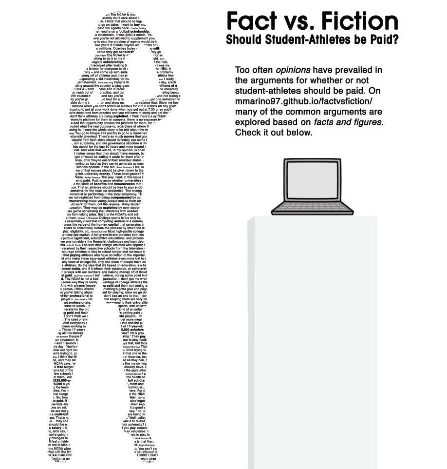

DISPLAY
Display For the display, I wanted to focus on the multitude of opinions about the issue. I also wanted to immediately communicate the focus on sports. I decided to create a lifesize silhouette of a basketball player shooting out of the many quotes of prevalent stakeholders. I kept the black and white for an editorial feeling.
HOMEPAGE
Homepage The homepage is separated into two different sections: fiction, which includes the full quotes that were printed on the basketball player; and fact, which includes much of my research displayed in interactive charts, tables, and visualizations.
STEP 1
Step 1 The entire process started in April of my Junior year when I decided on a topic and presented to my advisor. I focused on why I wanted to complete and what question I wanted to explore. I originally decided on the issue of paying student-athletes because it is an unavoidable conversation in collegiate sports. Focusing on the field I was planning on entering made the thesis a more meaningful experience than taking another class.
STEP 2
Step 2 The first step was research, which can't really be accurately represented in one picture. I read books and articles to learn more about the issue, talked to key people in the industry (included the Commissioner of the NBA), and downloaded tons of data. One big part was contextual research to figure out what the audience I was trying to communicate looked like. The context gave me some interesting insights including verifying that a website could be a convenient place to reach these people.
STEP 3
Step 3 About halfway through the fall semester of my Senior year, I presented the topic to the department for the first time. At this point, my thesis was taking a stance. I had read many articles at this point which argued for paying student-athletes. However, in communicating with an Academic Services for Student Athletes staff member at Notre Dame, I had become really interested in the idea that ignoring a student athlete's education was the real exploitation.
STEP 4
Step 4 After presenting, the questions were focused on how to bring the academic focus back to big-time collegiate athletics. I realized my topic was drifting away from the original focus and wanted to broaden my horizons. Throughout the process, I was getting increasingly annoyed in the baseless opinions presented within the discussion and accepted because of the names attached to the quotes. I decided to refocus on the issue and present the facts from both sides.

STEP 5
Step 5 Towards the end of the semester, I presented a defense in front of the department. This time, my presentation was more focused on the actual issue I was trying to research, and the conversation afterwards better reflected the original question. My actual thesis statement was established at this point which set me in the right direction.

STEP 6
Step 6 Next, I sketched some ideas for the display which eventually turned into a digital rendering. I was originally planning on having two silhouettes, one of a basketball player and one of a football player. However, in considering the amount of space, time, and resources that would require, I switched to just a basketball player. The install wasn't the easiest and it took a fw tries, but I was proud of how it turned out.
STEP 7
Step 7 I decided to be adventurous (and maybe a little too ambitious) and code the entire website from scratch. Admittedly, I might not have had the knowledge this required, but I learned a lot along the way (thanks, Google!). There were hours (or weeks) spent on the input and design of the data even with mockups for each page. The most difficult page was the interactive table with Division 1 Athletics programs' financials. There were literally thousands of lines of code, multiple attempts at different javascript tables, and multiple late nights prior to the completion of that page. Also, fun fact: find and replace makes things way easier and quicker, as I found out halfway through the creation of this page.